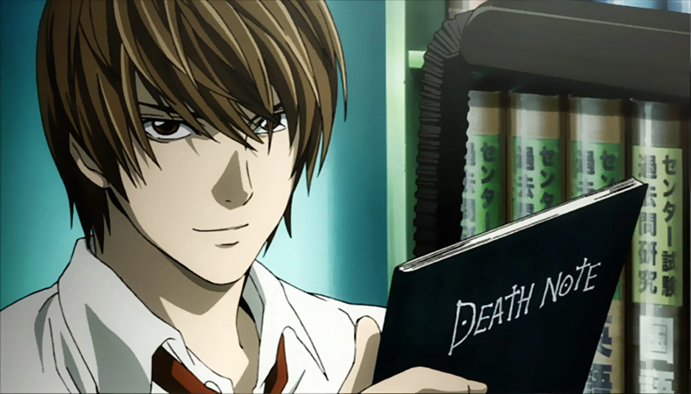

Naruto Uzumaki

Protagonista de Naruto, um ninja determinado a se tornar Hokage e ser reconhecido por todos.
Luffy

Protagonista de One Piece, capitão dos Chapéus de Palha, buscando o tesouro One Piece.
Goku

Protagonista de Dragon Ball, guerreiro Saiyajin que protege a Terra contra inimigos poderosos.
Edward Elric

Protagonista de Fullmetal Alchemist: Brotherhood, alquimista que busca recuperar seu corpo perdido.
Light Yagami
Protagonista de Death Note, um estudante que encontra um caderno capaz de matar e cria sua própria justiça.
Tanjiro Kamado

Protagonista de Demon Slayer, caçador de demônios que luta para salvar sua irmã Nezuko.
Izuku Midoriya

Protagonista de My Hero Academia, um jovem que sonha em ser herói mesmo sem poderes inicialmente.
Levi Ackerman

Personagem de Attack on Titan, soldado habilidoso e temido pelos titãs, conhecido por sua disciplina.
Kirito

Protagonista de Sword Art Online, habilidoso jogador preso dentro de um jogo de realidade virtual mortal.
Asuka Langley Soryu

Personagem de Neon Genesis Evangelion, piloto de EVA determinada e orgulhosa.